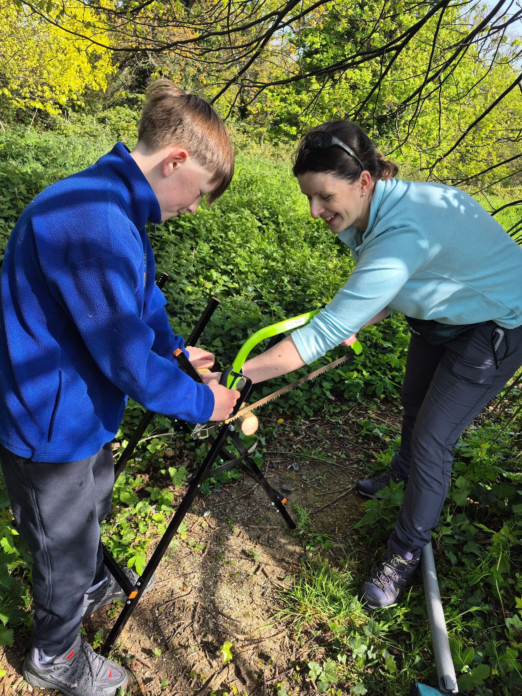
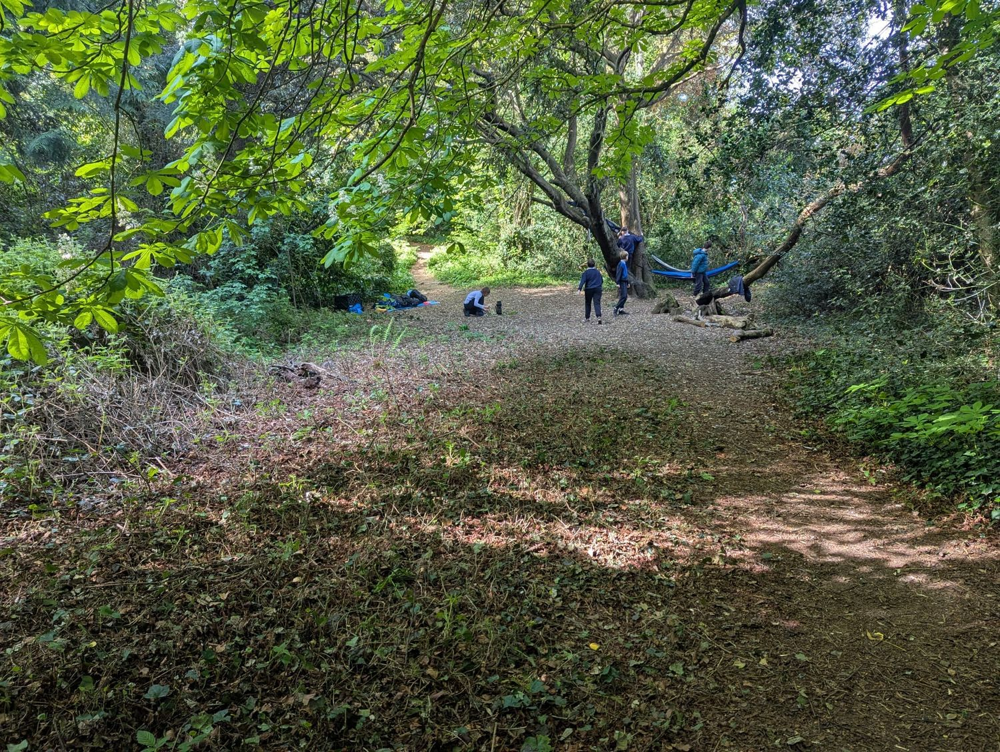

Wicklow County Council
Thank you for the ongoing support of our Forest School programme.

St Cronan's teachers Anna Moraghan and Sinéad Slater trained through Brigit's Garden's Forest School Leadership course (QQI Level 6) and are fully insured to facilitate Forest School activities.
Both facilitators also hold up-to-date Remote Emergency Care certificates. A full set of policies and risk-benefit assessments is available to view on request.
We are fortunate to have access to a magical woodland and meadow area behind our school and the neighbouring San Souci estate. It gives children a rich natural setting for regular outdoor learning, exploration and play.

Thank you for the ongoing support of our Forest School programme.
Thank you for supporting nature, biodiversity and outdoor learning in our local area.
Thank you for the continued community support that helps make our work possible.